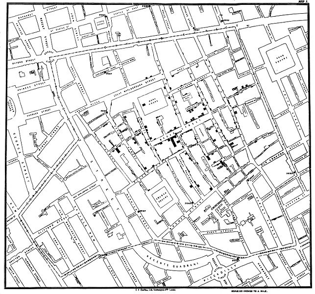

Creado por
Sergio Sorín / @pollatos
Sebastián Scarano / @opensas
Doctrina política que sostiene que los temas de gobierno y administración pública deben ser abiertos a todos los niveles posibles.
Se basa en tres ejes:
Es una parte de una estrategia de Gobierno Abierto.
Definición: el conocimiento es abierto si cualquiera es libre de:
Esta definición está basada en el concepto de software libre.
El dato debe estar preparado para ser procesado.
Los datasets, o conjuntos de datos, agrupan uno o más recursos de datos así como la documentación que les da contexto.
Los recursos son archivos que contienen:
Los datasets, también tienen asociados un conjunto de metadatos que agregan información acerca del dataset.
Algunos ejemplos de metadatos más habituales:
Sistemas de información que permiten crear, almacenar, editar, analizar y visualizar información geográficamente referenciada.
En un sentido más genérico se trata de herramientas que permiten crear consultas interactivas, analizar información espacial, editar datos y mapas, y visualizar los resultados de estas operaciones.
En 1854 el pionero de la epidemiología, el Dr. John Snow cartografió la incidencia de los casos de cólera en el distrito de Soho en Londres. Utilizando métodos cartográficos, no solo representaba la realidad, sino que por primera vez analizaba conjuntos de fenómenos geográficos dependientes.
Coordenadas geográficas: sistema de referencia que utiliza dos coordenadas angulares, latitud (Norte y Sur) y longitud (Este y Oeste) medidas desde el centro de la Tierra. Forman parte de un sistema de coordenadas geográficas que incluye un datum, meridiano principal y unidad angular.
Coordenadas proyectadas: sistema de representación que establece una relación entre los puntos de la superficie curva de la tierra (coordenadas geográficas) y los de una superficie plana (mapa). Los puntos se identifican por coordenadas cartesianas (x e y) que se obtienen matemáticamente a partir de las coordenadas geográficas (latitud y longitud).
El sistema de coordenadas más común es el WGS 84
Tip: Para jugar interactivamente con estos formatos: geojson.io
SELECT
*,
( select count(*) from cajeros as c
where st_within(c.the_geom, b.the_geom)
) as cajeros
FROM
barrios as b
Tomar el archivo 01_juntas_discapacidad.csv y normalizar el campo provincia y localidad. Luego generar un archivo separado por comas (CSV) con la siguiente estructura:
Consejos: Usar facetas y la opción cluster para arreglar el campo provincia.
El campo localidad tiene varias inconsistencias e información que está de más. Utiliza una faceta por este campo para localizar esos registros y ver qué fórmula aplicar para dejar solamente el nombre de la localidad.
Nota: la solución del ejercicio está aquí
Tomar el archivo 02_personas.csv, normalizar todos los campos y generar un archivo separado por comas (CSV) con la siguiente estructura:
Usar facetas y la opción cluster para arreglar la nacionalidad. Las nacionalidades que deberían quedar son: Argentina, Brasileña, Chilena, Uruguaya, Otra y en blanco.
Los únicos títulos que deberían quedar son: Dr.,Ing.,Lic.,Prof. (Señor y Sr. los eliminamos)
Para ver cuáles son los títulos actualmente cargados resultará útil hacer una faceta por la primera palabra del campo nombre (Custom text facet)
Para separar el nombre del apellido, hay que tener en cuenta que algunos registros vienen en la forma "apellido, nombre" y otros como "nombre apellido". Utilizar el filtro de texto para tratar estos dos casos por separado. En el primer caso podremos usar split separando por el caracter coma y en el segundo separando por el caracter espacio.
Nota: la solución del ejercicio está aquí
Vamos a consumir un servicio web de tipo REST que nos retornará un JSON para geocodificar nuestras direcciones.
Es un sistema que corre en la web y que permite intercambiar datos entre aplicaciones.
Es un estilo de servicio web que busca aprovechar la infraestructura de internet y permitir intercambiar información de una manera simple
Es un formato liviano para el intercambio de datos. Todo objeto JSON es a su vez un objeto válido en JavaScript, lo que hace que trabajar con él sea muy fácil.
DuckDuckGo es un buscador web que pretende competir con Google respetando nuestra privacidad.
Provee una API REST que nos brinda su funcionalidad como un web service. Por ejemplo, para ver el resultado de buscar "Buenos Aires" a través de la API ingresamos:
http://api.duckduckgo.com/?q=buenos aires&format=json&pretty=1
{
"Heading" : "Buenos Aires",
"RelatedTopics" : [
{
"Icon" : {
"URL" : "https://duckduckgo.com/i/c8804af5.png",
},
"FirstURL" : "https://duckduckgo.com/Buenos_Aires",
"Text" : "Buenos Aires The capital and largest city of Argentina..."
},
{
"Icon" : {
"URL" : "https://duckduckgo.com/i/2826ecf7.png",
},
"FirstURL" : "https://duckduckgo.com/Buenos_Aires_Province",
"Text" : "Province of Buenos AiresThe largest and most populous Argentinian province."
},
[...]
]
};
Tomando el ejemplo del resultado de consultar la API de DuckDuckGo, recorrereremos el JSON devuelto utilizando JavaScript.
Abrir un explorador web (Firefox o Chrome), apretar F12 para abrir la consola JavaScript, y pegar el siguiente texto:
var resultados = {
"Heading" : "Buenos Aires",
"RelatedTopics" : [
{
"Icon" : {
"URL" : "https://duckduckgo.com/i/c8804af5.png",
},
"FirstURL" : "https://duckduckgo.com/Buenos_Aires",
"Text" : "Buenos Aires The capital and largest city of Argentina..."
},
{
"Icon" : {
"URL" : "https://duckduckgo.com/i/2826ecf7.png",
},
"FirstURL" : "https://duckduckgo.com/Buenos_Aires_Province",
"Text" : "Province of Buenos AiresThe largest and most populous Argentinian province."
},
{
"Icon" : {
"URL" : "https://duckduckgo.com/i/35bb000c.jpg",
},
"FirstURL" : "https://duckduckgo.com/Greater_Buenos_Aires",
"Text" : "Greater Buenos Aires, the urban agglomeration comprising..."
}
]
};
Utilizando JavaScript consultar el Heading, el url del ícono del primer resultado, el url del ícono del último resultado y la cantidad de resultados retornados por la consulta.
Nota: la solución del ejercicio está aquí
Ahora sí...